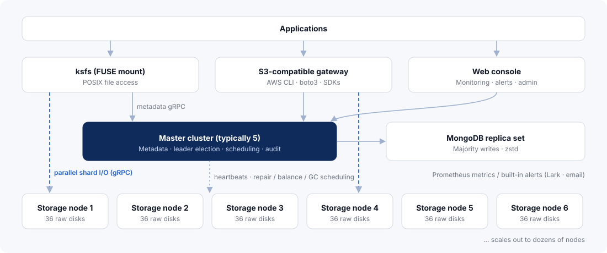
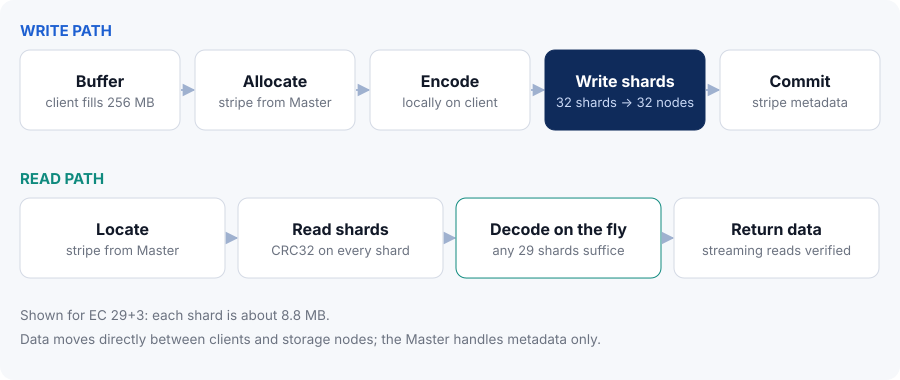
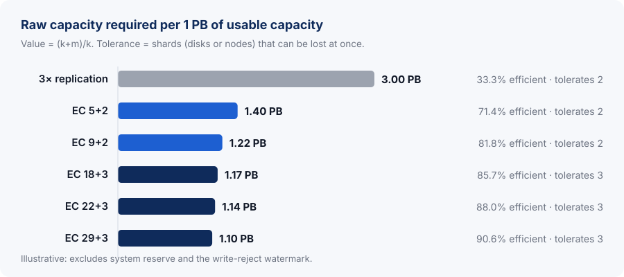
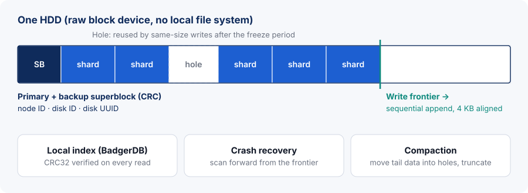
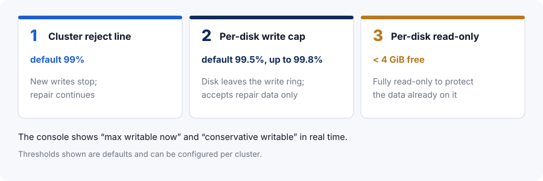
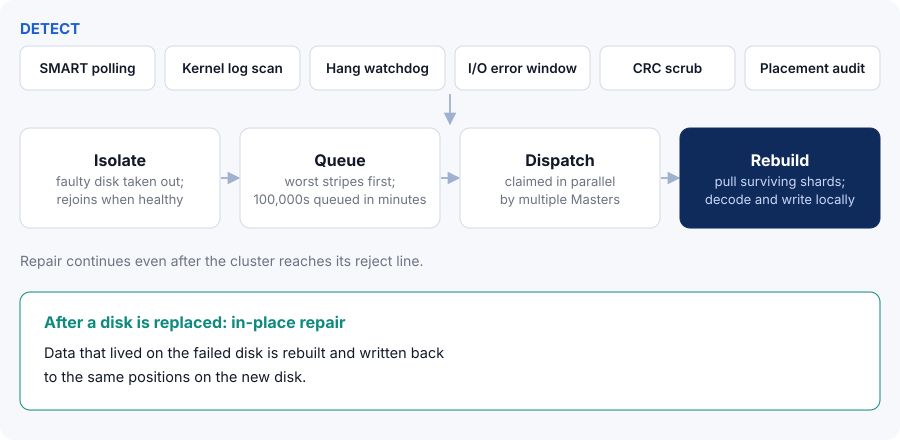

1Executive summary
KDSS is a distributed storage system built for petabyte-scale data. It protects data with Reed-Solomon erasure coding instead of replication, manages disks with a raw-disk engine instead of a local file system, and serves the same cluster through a POSIX mount (the ksfs FUSE client) and an S3-compatible API. A web console and an alerting system are built in.
KDSS is designed around three goals:
- Low cost. Storage efficiency reaches up to 91.2% (31+3). The 29+3 profile, selected automatically for large clusters, delivers 90.6% — about 37% of the raw capacity that triple replication needs for the same usable capacity. The engine appends sequentially to the block device, which reduces seeks and helps extend drive life.
- High reliability. Shards of a stripe never share a node; with 29+3, data remains readable and rebuildable even when any 3 shards are lost at once. Every read is CRC32-verified, background scrubbing and placement audits run continuously, four layers of disk-health monitoring isolate failing disks automatically, and repair runs locally on the storage nodes.
- Simple operations. Upgrades roll through the cluster without downtime, one node at a time by default. The web console shows cluster, node, disk and capacity views — including real-time “max writable now” and “conservative writable” figures. Built-in P0/P1/P2 alerts are pushed to Lark and email, and a full set of Prometheus metrics is exposed.
Proven in production
KDSS runs in multiple long-lived production clusters, with a deployed footprint of ~190 PB of raw capacity, more than 300 storage nodes and over 11,000 data disks, managing hundreds of millions of stripes. About 99% of production reads and writes go through the FUSE mount.
About this paper
This paper is written for architects, operations engineers and technical decision-makers evaluating or deploying KDSS. It covers the architecture, erasure coding and data layout, the storage engine, reliability mechanisms, access interfaces, operations and security, and closes with a capacity-planning method and recommended hardware. Everything described applies to version 26.11.2.
2Challenges of storing data at scale
At petabyte scale, the question is no longer whether the data fits, but whether it can be kept for years — affordably, reliably, and with a team that can still manage it.
2.1The cost of redundancy
Replication is the simplest form of redundancy, but triple replication yields only about 33% storage efficiency: every petabyte of data needs three petabytes of disk, along with the racks, power and operations that come with it. For data kept for many years, that overhead keeps compounding.
2.2Failures become routine
With thousands of disks, failed disks, slow disks and offline nodes are everyday events. The system must tolerate several simultaneous disk or node failures and detect, isolate and repair them without human intervention. It must also guard against silent corruption that raises no error, and against misrouted reads that return someone else’s data.
2.3Disk and file-system overhead
Storing huge numbers of large files on a local file system adds metadata updates, random writes and fragmentation. On high-capacity HDDs, seek count drives both throughput and long-term disk health.
2.4Operations and capacity management
Does an upgrade need downtime? How much can still be written? Which disk is about to fail, and who gets the alert? A small cluster can answer these by hand; at dozens of nodes and thousands of disks the system must answer them. Capacity is especially easy to misjudge: the sum of free space is not the capacity that can actually be written.
2.5Access methods
Some applications work with files and need POSIX semantics; others are built for object storage and need an S3 API. Ideally, one system serves both.
| Challenge | KDSS approach | See |
|---|---|---|
| High redundancy cost | Reed-Solomon erasure coding with 71.4%–91.2% efficiency, profile chosen by node count | Ch. 5 |
| Concurrent disk / node failures | Shards placed on distinct nodes; 3-parity profiles survive any 3 lost shards | Ch. 5, 7 |
| Silent corruption, misrouting | CRC32 on every read; stripe ID and shard index checked on the read path; background scrubbing | Ch. 6, 7 |
| File-system overhead, disk wear | Raw-disk writes, sequential append, 4 KB alignment; hole reuse and compaction | Ch. 6 |
| Manual failure handling | Four-layer health monitoring, automatic isolation and recovery, local rebuild, in-place repair | Ch. 7 |
| Upgrade downtime, opaque capacity | Non-disruptive rolling upgrades; real-time max / conservative writable capacity | Ch. 9 |
| File and object access | ksfs FUSE client for POSIX mounts; S3-compatible gateway | Ch. 8 |
3KDSS at a glance
KDSS treats redundancy, on-disk layout, access and operations as one design: erasure coding sets cost and fault tolerance, the raw-disk engine sets disk efficiency and data verification, FUSE and S3 set how applications connect, and the console and alerts determine whether the system can be run reliably for years.
3.1Positioning
KDSS is built for large, mostly large-file data that must be retained for a long time: sealed data for decentralized storage networks, cold archives, video and media assets, backup copies, and raw data for AI and analytics. It organizes data into 256 MB stripes and records data locations per stripe (plus directory and file metadata), so metadata stays small even at petabyte scale.
3.2Key specifications
| Item | Specification |
|---|---|
| Redundancy | Reed-Solomon erasure coding (klauspost/reedsolomon, SIMD-accelerated) |
| EC profiles | Automatic: 5+2, 9+2, 18+3, 29+3. Manual high-density: 19+3, 21+3, 22+3, 31+3, 31+2 |
| Storage efficiency | 71.4% (5+2), 90.6% (29+3), 91.2% (31+3) |
| Fault tolerance | 3-parity profiles: any 3 shards (disks or nodes) can be lost at once |
| Stripe size | One 256 MB block = one stripe; about 8.8 MiB per shard with 29+3 |
| Cluster size | From 8 nodes (5+2); about 18 PB raw per cluster (36 nodes × 36 × 14 TB disks) |
| Storage engine | Raw-disk, sequential append, 4 KB aligned; dual superblocks; BadgerDB local index |
| Data verification | CRC32 on every read, including streaming reads; background CRC scrub, 20 MB/s per node by default |
| Access | ksfs FUSE client (POSIX mount); S3-compatible gateway |
| Operations and HA | Rolling upgrades; replicated Masters with a MongoDB replica set; built-in alerts and Prometheus metrics |
3.3Design principles
Large stripes, little metadata
256 MB stripes; data locations are recorded per stripe (plus directory and file metadata), so metadata stays small and grows slowly.
Data bypasses the Master
Clients encode locally and talk to storage nodes in parallel; the Master handles metadata, election and scheduling.
Failure is normal
Detection, isolation, repair and scrubbing are automatic; repair continues after the cluster stops accepting writes.
Conservative defaults
EC profiles are chosen conservatively from the node count; fsync defaults to every write.
3.4Versioning and technology
KDSS uses calendar versioning (YY.MM.PATCH); this paper covers 26.11.2. Technology stack: Go, gRPC + Protocol Buffers, MongoDB, klauspost/reedsolomon, hanwen/go-fuse, BadgerDB, Gin, Vue 3 + Element Plus, Zap and the Prometheus client.
4System architecture
KDSS has an access tier (ksfs, the S3 gateway and the web console), a control tier (the Master cluster and a MongoDB replica set) and a data tier (storage nodes). Data flows directly between clients and storage nodes; the Master handles only metadata and scheduling.

4.1Components
| Component | Responsibilities | Ports |
|---|---|---|
| Master | Metadata, leader election; schedules repair, balancing, GC and placement audits | gRPC 6700, metrics 6701 |
| Storage | Raw-disk I/O, local rebuild, disk-health monitoring | gRPC 6800, metrics 6801 |
| MongoDB replica set | Collections such as inodes, dentries, stripes, nodes and buckets; zstd compression, majority writes | — |
| ksfs | FUSE client for POSIX mounts; client-side EC encoding and decoding | — |
| S3 gateway | S3-compatible API for object-storage applications | 9000 |
| Web console | Cluster management, monitoring, alerting, users and permissions | 8081 |
4.2Metadata
The file-system namespace (inodes, dentries), stripe locations (stripes), node information (nodes) and buckets (buckets) live in a MongoDB replica set with zstd compression and majority write concern. Because each stripe holds 256 MB, one petabyte of data maps to only about four million stripe records — metadata is several orders of magnitude smaller than the data it describes.
4.3Write and read paths

Write
- Buffer: ksfs buffers incoming data on the client up to 256 MB.
- Allocate: it asks the Master for a new stripe and its shard locations.
- Encode locally: the client performs EC encoding — with 29+3, 29 data shards and 3 parity shards.
- Write in parallel: all 32 shards are written in parallel to 32 different storage nodes.
- Commit: once all data shards and at least one parity shard are written, the stripe metadata is committed to the Master; repair fills in any missing shards.
Read
- Locate: the client gets the stripe’s shard locations from the Master.
- Read in parallel: shards are read from storage nodes in parallel, each verified with CRC32.
- Reconstruct on the fly: if shards are missing, the remaining shards are decoded in real time.
4.4Control-plane availability
The Master runs as several replicas (typically five) and elects a leader through the MongoDB replica set. Leader failover is automatic, and client write requests are redirected to the current leader.
5Erasure coding and data layout
Erasure coding turns k data shards into m additional parity shards; any k of the k+m shards are enough to recover the original data. KDSS uses Reed-Solomon coding, implemented with klauspost/reedsolomon and SIMD acceleration.
5.1Profiles and storage efficiency
KDSS picks a profile automatically from the number of nodes, erring on the side of safety. Higher-density profiles can be selected manually once fault-tolerance requirements are understood. Storage efficiency = k / (k+m).
| Profile (k+m) | Efficiency | Shards that can be lost | Minimum nodes | Selection |
|---|---|---|---|---|
| 5+2 | 71.4% | 2 | 8 | Auto Entry size |
| 9+2 | 81.8% | 2 | 12 | Auto |
| 18+3 | 85.7% | 3 | 22 | Auto |
| 29+3 | 90.6% | 3 | 33 | Auto Recommended at scale |
| 19+3 | 86.4% | 3 | 23 | Manual High density |
| 21+3 | 87.5% | 3 | 25 | Manual High density |
| 22+3 | 88.0% | 3 | 26 | Manual High density |
| 31+3 | 91.2% | 3 | 35 | Manual High density |
| 31+2 | 93.9% | 2 | 34 | Manual Lower tolerance; use with care |
Note: efficiency for 19+3, 21+3 and 31+2 is computed as k/(k+m). Each minimum node count equals the stripe width k+m plus one.
5.2Cost compared with replication
For the same usable capacity, 29+3 needs about 37% of the raw capacity of triple replication — while raising fault tolerance from 2 to 3.

5.3Stripe layout
Each 256 MB block forms one stripe. With 29+3, the block is split into 29 data shards of about 8.8 MiB, 3 parity shards are computed, and all 32 shards are written to 32 different nodes. Large stripes keep every disk I/O large and let data locations be recorded per stripe, keeping metadata small.
5.4Placement constraints and audit
Fault tolerance only holds if no two shards of a stripe share a node — otherwise one node failure could take out several shards. KDSS enforces this as a hard rule:
- Enforced on three paths. Writes, repairs and balancing — every path that creates shards — check the constraint when choosing target nodes.
- Continuous placement audit. The Master continuously audits the placement of every stripe in the background, independently verifying the three checks above.
6Raw-disk storage engine
Storage nodes read and write block devices directly, bypassing the local file system. Shards are appended sequentially, located through a local index, and verified on every read.
6.1Sequential append
Shards are 4 KB aligned and appended at the write frontier. Compared with keeping many files on a file system, this avoids random file-system metadata updates and reduces head seeks: throughput is steadier, which helps extend drive life.

6.2Superblocks and disk identity
Each disk carries a primary and a backup superblock, both CRC-protected. The superblock records the disk’s identity — node ID, disk ID and disk UUID. At startup the storage node uses it to identify every disk: if a disk has moved to another slot or its device name has changed, this is detected and corrected automatically; if a disk that does not belong to the node is attached, the node refuses to start rather than write data to the wrong disk.
6.3Local index and verification
Shard locations on disk are tracked in a local BadgerDB index. Every read is CRC32-verified, streaming reads included. If shards are missing at read time, the client reconstructs the data from the remaining shards in real time.
6.4Crash recovery
| Situation | Behavior |
|---|---|
| Clean shutdown | Starts in seconds |
| Power loss | Scans forward from the write frontier to restore index entries written before the outage |
| Interrupted compaction | The local index can be rebuilt from the whole disk |
| Many disks per node | All disks are opened in parallel |
6.5fsync policies
| Policy | Description |
|---|---|
| immediate (default) | Every write is flushed to disk before it is acknowledged |
| batch | Group commit: several writes share one flush |
| deferred | Flushed in the background every 5 seconds; a power loss can lose up to the last ~5 seconds of writes. For hardware with power-loss protection (such as a RAID controller with a BBU) where that window is acceptable |
6.6Hole reuse and compaction
Deletes are soft. Data first goes to the recycle bin; only after a configurable freeze period does its space become a reusable hole. New shards can be written straight into a hole of exactly the same size — holes are never split, so no fragments are created.
Compaction moves data from the end of the disk into holes and then truncates the freed tail. The process is crash-safe, every moved shard is read back and verified, and metadata is not changed at all — the layers above never notice.
6.7Three levels of capacity protection
As disks fill up, writes are restricted in three steps, so that repair always has room and existing data is never put at risk:

7Reliability and self-healing
KDSS breaks reliability into three jobs: find problems early, stop them from spreading, and restore redundancy quickly. Every step runs automatically by default.

7.1Four layers of disk-health monitoring
| Layer | Purpose |
|---|---|
| Periodic SMART collection | Reads SMART data on a schedule to track long-term health trends |
| Fast kernel-log scan | Catches disk errors reported by the kernel quickly; debounced to avoid acting on one-off messages |
| I/O hang watchdog | Declares a hang when a read has not returned in 120 s or a write in 300 s |
| Sliding I/O-error window | Counts I/O errors over a time window; isolates the disk above the threshold and restores it automatically once healthy |
7.2Local rebuild on storage nodes
When shards are missing, the storage node rebuilds them itself: it fetches the surviving shards of the stripe, decodes locally and writes the result straight to disk, cutting out extra network hops. Repair work is organized as follows:
- Worst first. Stripes are ordered by the number of missing shards, so those closest to data loss are repaired first.
- Bulk queuing. Repair tasks are created in batches — hundreds of thousands of stripes can be queued within minutes.
- Distributed dispatch. Multiple Masters claim repair tasks in parallel.
- Repair when full. When the cluster reaches its reject line, new writes stop but repair continues.
7.3In-place repair
After a failed disk is replaced, KDSS can rebuild the data it held and write it back to the same positions on the new disk.
7.4Identity checks on the read path
Every read carries the stripe ID and shard index and is checked against them, so a misrouted request can never return another stripe’s data. This complements CRC: CRC proves the data is intact, the identity check proves it is the right data.
7.5Background CRC scrubbing
A background scrubber periodically reads and verifies shards on disk, finding silent corruption in data that has not been accessed for a long time. Scrubbing is rate-limited (20 MB/s per node by default) and its period is configurable, so it does not interfere with production I/O.
7.6Recycle bin and two-phase GC
Accidentally deleted data can be restored from the recycle bin. Garbage collection runs in two phases with a configurable retention window. A read-only orphan-shard reconciliation tool compares shards on disk with metadata without modifying anything.
7.7Balancing
- Cross-node balancing (explicitly triggered). Source nodes are chosen by deviation from the mean, and targets are the emptiest nodes in each stripe’s free-node set. Moves are double-checked for duplicates and metadata is updated with versioned compare-and-swap, preventing conflicts and repeated moves. Balancing is also subject to the placement checks.
- Intra-node balancing. Evens out usage across the disks within a node.
8Access interfaces
KDSS offers two ways in: the ksfs FUSE client for POSIX file access, and an S3-compatible gateway for object-storage applications. About 99% of production reads and writes go through FUSE.
8.1ksfs FUSE client
- Mounts as a POSIX file system — existing applications read and write without changes.
df -hreports the cluster’s real capacity.- fsync is honored for durability.
- Read/write buffering, concurrency and rate limits are tunable.
- EC encoding runs on the client, and EC verification can run in parallel with writes.
8.2S3-compatible gateway
The S3 gateway supports the core S3 API (see the table below). Verified clients: AWS CLI, boto3 and s3cmd (configured as documented). Requests are signed with AWS SigV4; clients use path-style addressing with region us-east-1. Large objects are streamed: up to 64 MB is buffered, anything larger is streamed in 64 MB segments, keeping memory use bounded.
| Category | APIs |
|---|---|
| Bucket | ListBuckets, CreateBucket, DeleteBucket, HeadBucket, ListObjectsV2 |
| Object | PutObject, GetObject (incl. Range), HeadObject, DeleteObject, CopyObject |
| Multipart upload | CreateMultipartUpload, UploadPart, CompleteMultipartUpload, AbortMultipartUpload, ListParts, ListMultipartUploads |
# Access keys are created in the web console; <gateway> is the S3 gateway address
aws --endpoint-url http://<gateway>:9000 s3 mb s3://archive
aws --endpoint-url http://<gateway>:9000 s3 cp ./dataset.tar s3://archive/2026/dataset.tar
aws --endpoint-url http://<gateway>:9000 s3 ls s3://archive/2026/
import boto3
from botocore.config import Config
s3 = boto3.client("s3", endpoint_url="http://<gateway>:9000",
aws_access_key_id="<ACCESS_KEY>", aws_secret_access_key="<SECRET_KEY>",
region_name="us-east-1", config=Config(s3={"addressing_style": "path"}))
s3.upload_file("dataset.tar", "archive", "2026/dataset.tar") # large files use multipart upload automatically
obj = s3.get_object(Bucket="archive", Key="2026/dataset.tar", Range="bytes=0-1048575")
8.3Choosing an interface
Use FUSE (ksfs) for applications that work with file paths, need POSIX semantics and fsync, or write and read large files sequentially in bulk. Use the S3 gateway for applications built on object storage, uploads and downloads across networks, and backup or archive workflows that already rely on S3 tooling.
9Operations and observability
The tools needed to run KDSS are built in: a management console, a capacity panel, metrics and alerting, and a rolling-upgrade procedure that avoids downtime.
9.1Web management console
The console, built with Vue 3 and Element Plus, provides:
Cluster views
Status and usage of clusters, nodes and disks
Capacity panel
Max writable now, conservative writable, recycle bin
Data management
Buckets, access keys, file browser
Alerts
Alert rules, notification channels, alert history
Audit
Audit log of operations
Users
Multiple users with role-based permissions
9.2Writable capacity
In an erasure-coded cluster, total free space is not the same as what can still be written: a 29+3 stripe needs space on 32 different nodes at once, so as some disks fill up or leave the write ring, real writable capacity drops below free space. The console therefore reports two figures directly — max writable now and conservative writable — as the basis for expansion and scheduling decisions, and raises an alert when too few nodes can accept writes.

9.3Metrics and alerting
- Prometheus metrics: a complete set under the
kdss_*namespace;/metricssupports Bearer-token authentication; 63 alert-rule templates ship with each release. - Built-in alerting: P0 / P1 / P2 severities, debouncing and reminder intervals, delivery to Lark and email, and alert history.
- Built-in rules: cover too few writable nodes, capacity, disk failures, MongoDB liveness and more.
9.4Non-disruptive rolling upgrades
By default, upgrades proceed one node at a time. Each node goes through:
- Cordon: the node enters maintenance mode and stops accepting new writes.
- Drain: wait until in-flight writes reach zero.
- Replace: install the new binaries and restart.
- Verify: confirm the node is healthy.
- Uncordon: the node accepts writes again; move on to the next one.
9.5High availability
The Master runs as several replicas (typically five) and elects a leader together with the MongoDB replica set (majority writes). Failover is automatic, and client writes are redirected to the leader. Storage-node failures are covered by erasure-coded redundancy and trigger automatic repair.
10Security
KDSS is deployed on internal networks by default. Its security controls cover identity and permissions on the management plane, access to the metrics endpoint, and encryption between components.
| Area | Control |
|---|---|
| Role-based access (RBAC) | Multiple users with three roles: admin, storage_admin and readonly |
| Authentication | JWT sessions; passwords stored with bcrypt; login rate limiting and CAPTCHA |
| Web protection | CSRF protection |
| Audit | Audit log of console operations |
| S3 access | AWS SigV4 signing; buckets and access keys created and managed in the console |
| Metrics endpoint | /metrics supports Bearer-token authentication |
| Inter-component traffic | Optional gRPC mTLS; can be left off for internal-only deployments |
10.1Deployment recommendations
- Place Masters, storage nodes and MongoDB on an isolated internal network; enable gRPC mTLS whenever traffic crosses an untrusted network.
- Assign roles by least privilege: readonly for day-to-day viewing, storage_admin for storage operations, and admin only for user and system administration.
- Configure a Bearer token for
/metricsso that only your monitoring system can scrape it.
11Capacity planning and configuration
Capacity planning starts from three questions: how much usable capacity is needed, how many simultaneous shard failures must be tolerated, and how many nodes are available. The node count determines which EC profiles are possible; the profile determines storage efficiency.
11.1Sizing formula
11.2Worked examples
| Configuration | Raw | Profile | Efficiency | Usable (× 99% watermark) | Tolerance |
|---|---|---|---|---|---|
| 8 nodes × 36 disks | 4,608 TB | 5+2 | 71.4% | ≈ 3,259 TB | 2 |
| 12 nodes × 36 disks | 6,912 TB | 9+2 | 81.8% | ≈ 5,599 TB | 2 |
| 22 nodes × 36 disks | 12,672 TB | 18+3 | 85.7% | ≈ 10,753 TB | 3 |
| 33 nodes × 36 disks | 19,008 TB | 29+3 | 90.6% | ≈ 17,054 TB | 3 |
Note: usable = raw × k/(k+m) × 99%, using the exact efficiency (e.g. 19,008 TB × 29/32 × 99% ≈ 17,054 TB). System disks, reserved space and the difference between nominal and usable disk capacity are not included.
11.3Planning guidelines
- One node more than the stripe width. The minimum node count for each profile is k+m+1 — at least 33 nodes for 29+3.
- Choose the profile by fault tolerance. To survive 3 simultaneous shard failures, use 18+3 or higher. Use 31+2 only where reduced tolerance is an explicit, accepted trade-off.
- Leave room for maintenance. Rolling upgrades go one node at a time by default; the number of nodes in maintenance together is capped at m − 1.
- Watch writable nodes. Writing a stripe needs k+m nodes that can accept writes. As nodes fill up, expand before the “too few writable nodes” alert fires.
11.4Recommended hardware
| Role | Configuration |
|---|---|
| Storage node | 36 × 16 TB enterprise HDDs (JBOD pass-through); 20-core-class Xeon CPU; 64 GB RAM; 2 × 10 GbE bonded (20 Gbps); RAID1 system disks |
| Master | Can be co-located with storage on nodes with RAID1 system disks; typically 5 |
| MongoDB | Replica set on SSDs |
| Minimum size | 8 nodes (5+2) |
12Typical use cases
KDSS fits large, mostly large-file data that is written once and kept for a long time. Typical scenarios include:
Decentralized storage
e.g. FilecoinChallenge
Sealed data is large and long-lived; storage cost directly drives returns, and lost data means lost revenue.
Approach
Sealed output lands sequentially through the FUSE mount, stored with high-density EC; automatic repair and scrubbing keep it available.
Outcome
Over 90% storage efficiency (90.6% with 29+3); data stays intact through multiple concurrent failures; existing programs use the POSIX mount as is.
Cold-data archive
ArchiveChallenge
Data may go unread for years but must not be lost; silent corruption found only at read time is found too late.
Approach
Erasure coding lowers long-term cost; background CRC scrubbing finds and repairs corruption proactively; the recycle bin guards against mistakes.
Outcome
Low retention cost and continuously verifiable data integrity.
Video and media
MediaChallenge
Large assets and fast growth; high sequential throughput plus random-access reads.
Approach
Large stripes read and written in parallel (256 MB stripes over FUSE, 64 MB segments for large S3 objects); S3 GetObject with Range reads; scale out by adding nodes.
Outcome
Steady large-file throughput; file and object access to the same cluster.
Backup and disaster recovery
BackupChallenge
Backup copies consume large amounts of capacity, and the backup target itself must be reliable and easy to manage.
Approach
Backup software with S3 support connects over S3 (validate compatibility before going live), with multipart upload for large objects; alerts go to Lark and email.
Outcome
Backups stored with erasure coding instead of replicas; deletions go to the recycle bin first, adding a layer of recovery.
Raw data lakes for AI and analytics
Data lakeChallenge
Raw datasets keep growing, read both by file-based training jobs and by object-based pipelines.
Approach
Compute nodes read through the FUSE mount; pipelines write and distribute through S3.
Outcome
One storage system for both access patterns; capacity scales out with nodes.
Private cloud object storage
On-premisesChallenge
Build in-house object storage on standard servers, with a full management console, permissions and monitoring.
Approach
Runs in your own data center on standard servers with JBOD disks; the console manages buckets, access keys and users with three RBAC roles; Prometheus metrics and built-in alerting.
Outcome
You control deployment and growth; it plugs into existing monitoring; rolling upgrades keep maintenance out of the way.
13Contact us
To discuss deployment, capacity planning or technical details of KDSS, please get in touch.
Website: www.kdss.io
Features and parameters described in this document apply to KDSS version 26.11.2. Figures and examples marked “illustrative” explain principles and do not represent measured results of a specific deployment. Product features may change between releases; the released version is authoritative.
Third-party names and trademarks mentioned herein belong to their respective owners.
© 2026 KDSS. All rights reserved.